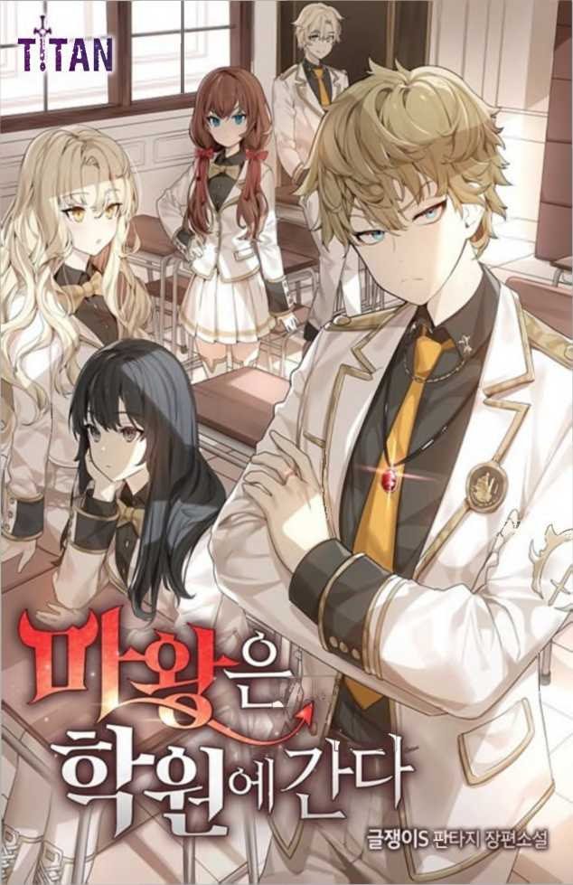

##!!## 마왕은 학원에 간다 Chapter 350화
##!!## The Demon Prince Goes to Academy Chapter 0
350화
350 episodes
사비올린 타나는 라르켄 사이먼스 타이트에 대해 간략하게 설명해줬다.
Saviolin Tana gave a brief account of the Larken Simmons Tight.
라르켄 사이먼스타이트는 지금도 연배가 께 있는 사비올린 타나가 신 참일 때의 샤나펠 단장이었다.
Larken Simonstite was the head of the Shannapel when Saviolin Tana, who is still a senior, was God-true.
지금 사비올린 타나가 그러하둣， 그 또한 대륙 최강의 검사라는 타이 틀을 갖고 있었다. 라르켄 사이먼스 타이트는 사비올린 타나를 차기 샤 나펠 단장을 키우기 위해 많은 것들 을 가르쳤다.
Now Sabiolin Tana had a tie-frame of being the strongest prosecutor on the continent. Larken Simmons Tight taught many things to raise Sabiolin Tanah to the next general manager, Sha Nappel.
어마어마한 천재였던 그녀조차 템 플에서 배운 것들을 전부 뜯어고쳐 야 할 정도로 혹독한 수련 끝에，그 녀는 샤나펠의 1번 부대 기사대장이 될 수 있었다.
Even a great genius, she was able to become the Knight Commander of Shannapel's No. 1 unit after such rigorous training that she had to rip off everything she had learned from the templ.
라르켄 사이먼스타이트는 사비을린 타나가 신참일 당시에 이미 여든이 넘은 노인이었다. 사비올린 타나처 럼 수련과 마력운용 덕분에 노화가 더디긴 해도，그는 이미 은퇴할 나 이를 진작 넘은 참이었다.
Larken Simonstite was already over eighty when Xavierin Tana was new. Despite his slow aging thanks to Sabiolin Tanager Rum training and mana management, he had already exceeded his retirement age.
그렇기에 후대를 양성하고, 사비을 린 타나의 실력이 궤도에 오르자 그 는 다른 이에게 샤나펠 단장을 넘겨 주고 은퇴했다.
That's why he trained his future generation and retired after Xavi Lin Tana's ability was on track.
그건 딱히 이상한 일이 아니었다. 그래서 은퇴 후 조용히 여생을 보내 는 것으로 모두가 알고 있었다.
It wasn't exactly strange. So everyone knew that he would spend the rest of his life quietly after retirement.
마계대전의 위기감이 점점 고조되 자 제국은 힘을 필요로 했고，은퇴 한 그랜드마스터의 손 또한 빌리고 자 했다.
As the sense of crisis in the Magye War grew, the empire needed strength, and the retired Grand Master also wanted to borrow his hand.
하지만.
but
전혀 엉뚱하게도 라르켄 사이먼스 타이트는 마왕군 사천왕이 되어 있 었다. 그것도 다른 모든 사천왕들보 다 앞선 첫 번째 사천왕이라는 묵직 한 직함을 들고서.
Quite absurdly, Larken Simmons Tight was the Four Heavenly Kings of Mawang-gun. He also holds the title of the first Four Heavenly Kings ahead of all the other four Heavenly Kings.
사천왕에 대해서 전혀 모르고 있었 는데 그중 하나가 인간이기까지 했 다니. 심지어 사비올린 타나에겐 스 승이기까지 하다.
I didn't know anything about the Four Heavenly Kings, but one of them was human. It's even a teacher for Saviorin Tanah.
원작에선 죽은 마왕조차 언급이 잘 안 되는데 사천왕은 당연히 언급할 이유가 없었다. 이곳 생활할 때에도 마왕에 대해서나 가끔 이야기가 나 오지 사천왕에 대해선 이야기할 일 이 없었고.
In the original book, even the dead king was not mentioned well, but there was no reason to mention the Four Heavenly Kings. When I was living here, I had never talked about the king or the Four Heavenly Kings.
그래서 오히려 다른 이들은 거의 다 아는 걸 나만 모르는 기괴한 상 황이었던 거다.
That's why I was the only one who didn't know that most of the others knew.
“그가 왜 다크랜드의 사천왕이 되 었는지는….”
"Why he became Darkland's Four Heavenly Kings....â€
“모른다.”
"I don't know."
사비올린 타나는 고갤 저었다.
Saviolin Tanah shook her head.
“앞으로도 영영 알 수 없겠지.”
"You'll never know."
그녀는 마계대전에 참전하지 못한 것에 죄책감을 느끼고 있는 캐릭터 라고 설정해뒀다. 하지만 그 이면에 는 내가 모르는 내막까지 있었다.
She has set up a character who feels guilty about not participating in the World War II. But behind it was the inside story that I didn't know.
라르켄 사이먼스타이트는 대체 왜 인류를 배신하고 다크랜드의 편에 섰는가.
Why on earth did Larken Simonstite betray humanity and stand on the side of Darkland?
사르케가르나 로야르, 엘레리스라 면 혹시 알고 있을까?
Do you happen to know Sarkegar, Loyar, and Eleira?
사천왕에 관련한 질문들은 내가 애 초에 궁금해하질 않아서 묻지도 않 았는데，이렇게 들으니 이미 세상엔 없지만 사천왕에 대한 이야기들도 궁금해졌다.
I didn't ask questions about the Four Heavenly Kings because I wasn't curious at first, but now I'm curious about the stories of the Four Heavenly Kings.
그래도 제1 사천왕 자리를 받은데 다가 아이리가 검술을 배울 정도라 면 다크랜드에선 좋은 대우 받으면 서 잘 지냈던 것 같긴 한데.
Still, I was awarded the 1st 4th King's throne and Iri learned swordsmanship, so I think I've been doing well in Dark Land if I get good treatment.
사비을린 타나는 제국과 인류를 배 신한 라르켄에게 묻고 싶은 것이 많
Sabirin Tana has a lot to ask the Empire and humanity to Bae Shinhan Larken.
았지만，끝내 황실을 지켜야 한다는 명분 하에 다크랜드로 향하지 못했다.
However, he could not head to Darkland in the name of protecting the imperial family.
그래서 모든 것이 끝나버린 지금에 야 마왕성에 도착한 것이 씁쓸할 수 밖에 없을 터였다.
So now that everything was over, it would be bitter to arrive at Ya Mawangseong.
우리는 더 걸어서，끝내 목적했던 장소에 도달할 수 있었다.
We were able to walk further, and finally reach the destination.
마왕성의 정중앙.
the apex of the Great Wall
폐허가 되어버린 공터.
a ruined vacant lot
전투가 끝난 후에도 그간 비와 눈 이 내렸을 테지만，워낙 압도적인 싸움이 벌어졌던 장소여서 그런지 그 전투의 상흔은 쉬이 없어지지 않 았다.
It must have been raining and snowing after the battle, but the scars of the battle did not go away easily because it was the place where the overwhelming fight took place.
“이곳이 인류가 최후의 승리를 쟁 취한 장소입니다.”
"This is where humanity won its last victory."
마왕과 용사의 싸움이 벌어졌던 장소.
The place where the battle between the devil and the warrior took place.
열주와 조각상들은 전부 파괴되어 있었고，대지는 움푹 파여 있었다.
The poles and statues were all destroyed, and the earth was hollow.
매우 넓은 공간이었음에도 모든 장 소에 과격했던 전투의 흔적들이 있 었고，주변의 마왕궁 벽면은 무언가 에 뜯겨나간 듯 날아가 버렸거나 붕 괴한 흔적들도 있었다.
Although it was a very large space, there were traces of violent battles in every burial ground, and the walls of the palace were blown away as if something had been torn apart by.
“…겨우 두 존재가 싸웠다고 보기 에는 믿을 수 없는 광경이로군요.”
"...it's an incredible sight to say that the two beings fought."
현시점에선 세계관 최강인 사비을 린 타나도 기가 질린 것 같았다.
At this point, Xavier Lin Tanah, the world's strongest view, also seemed to be exhausted.
“보고 또 보아도. 마왕이 대체 얼 마나 강력한 존재였는지…. 짐작조 차 가질 않습니다. 그리고 그에 대 적한 아르토리우스의 강함도 마찬가 지로….”
"Seeing and seeing. How powerful was the Devil?. I don't have any guesses. And the strength of Arthorius against him....â€
우리들은 공터 한복판으로 걸어 나 갔다.
We walked out in the middle of the vacant lot.
“라간 아르토리우스가…. 이 정도 였다니."
"Lagan Arthorius...I can't believe it was this bad."
사비올린 타나는 다른 의미로 충격 받은 것 같았다.
Saviolin Tana seemed shocked in another sense.
아무리 라간 아르토리우스가 대단 하다 한들 서른을 넘지 않았다.
No matter how great Lagan Arthorius was, he was not over thirty.
강한 일행들과 함께라곤 해도 은퇴 한 그랜드마스터를 죽이고 마왕까지 처치했다. 사비을린 타나는 그것이 과연 가능한 일인지 궁금해지기 시 작한 것 같았다.
He killed a retired Grand Master and even killed the devil with a strong group. Sabirin Tana seemed small when she wondered if it was really possible.
“싸움이 싸움이었던 탓에 마왕의 시신은 찾을 수 없었습니다만，아르 토리우스는 이 자리에서，알스브링 어를 대지에 꽂은 채，마치 잠든 것 같은 모습으로…. 발견되었습니다.”
"We couldn't find the demon's body because it was a fight.Man, Ar Torius, here, with Alsbring language on the ground, looks as if he were asleep.. Found."
나는 이 싸움을 보지 못했고, 묘사 하지도 않았지만，진실을 알고 있다.
I didn't see this fight, I didn't describe it, but I know the truth.
사천왕들까진 몰라도, 마왕을 쓰러 뜨린 건 라간 아르토리우스의 힘이 아니다.
The Four Heavenly Kings may not know, but it is not the power of Lagan Arthorius to topple the Mahwang.
그건 알스브링어의 힘이었다.
It was the power of Alsbringer.
알스브링어의 진짜 용도에 대해서 나를 제외하곤 아무도 모른다.
Nobody knows but me about the true use of the Alsbring language.
전쟁신 알스.
War god Als.
알스 (Als) 브링 어 (Bringer).
Als (Als) Bringer.
그건 말 그대로，전쟁신을 소환할 수 있는 검이다.
It's literally a sword that can summon the god of war.
애초에 마왕과 싸운 건 알스의 화 신이 된 라간 아르토리우스였다.
In the first place, it was Lagan Arthorius who became the incarnation of the Als.
대가는 목숨.
a life at cost
아르토리우스는 자신의 목숨을 대 가로 마왕을 죽였다.
Arthorius put his life to the death of the horizontal king.
루드비히는 알스브링어의 주인이 된다.
Ludwig becomes the master of Alsbringer.
고로 원작 전개에서，루드비히도 끝내 알스브링어의 진정한 힘을 사 용했었다는 이야기다.
Thus, in the original development, Ludwig finally used the true power of Alsbringer.
그러니까….
So...
비극성애자인 나는 결국 일상물로 시작했던 이 소설에서 끝내 주인공 을 죽여버린다는 미친 짓을 했단 소 리다.
As a tragic lover, I did a crazy thing about killing the main character in this novel, which eventually began as a daily life.
우 * *
Woo * * *
샬롯은 이제 안내는 됐다며 사령관 을 돌려보냈다.
Charlotte sent back the commander, saying, "I'm ready to tell you now."
이제부터 그가 들어선 안 될 이야 기들이 나오기 시작할 테니까. 그는 상층부를 돌아다니는 건 괜찮지만 지하에는 절대로 가면 안 된다고 신 신당부를 한 뒤 돌아갔다.
From now on, he's not supposed to be here. He's going to start coming out. He said, "It's okay to walk around the upper floors, but I should never go underground," and went back.
마왕궁은 병사들 몇몇이 돌아다니 긴 했지만 그 수가 그리 많지는 않 았다. 있다면 지하 쪽 수색에 전념 하고 있을 터였다.
The palace was long, with some soldiers wandering around, but not very large. If so, it would be dedicated to searching the basement.
결국 사령관이 이것저것 말해주긴 했지만 우리는 인류 역사의 변환점 을 관광하기 위해 온 게 아니라 샬 롯의 상태를 호전되게 할 실마리를 찾기 위해 온 것이다.
After all, although the commander told us this and that, we are not here to tour the turning point of human history, but to find clues to improve Schall Lot's condition.
“전하，뭔가 느껴지십니까?”
"Your Highness, do you feel anything?"
“……전혀요.”
"......not at all."
마왕이 죽은 장소.
The place where the devil died.
거기에 왔지만 샬롯은 아무것도 느 끼지 못하는 것 같았다.
I came there, but Charlotte seemed to be stuck in nothing.
결국 무작정 온 장소일 뿐이다. 마 왕의 시체도 남아있지 않은데다가 마왕의 영혼이라는 게 있다면 여기 에 잔류해있길 바라는 것도 너무 애 매한 바람이긴 하다.
After all, it's just a random place. If there are no dead bodies left and there is a spirit of the king, it is a bitter wish to stay here.
무엇보다도，시간이 너무 많이 흘 렸다. 위대한 싸움이 있었던 장소라 지만 그 흔적 이외엔 남아 있는 것 이 어디에도 없었다.
First of all, time has passed too much. It was a place where there was a great fight, but there was nothing left but the traces.
“결국 지하에 뭔가 있길 바라는 수 밖에 없는 걸까요.”
"Is it just that we can't help but hope there' something underground?"
“하지만…. 저희 예상보다 상당히 위험한 것 같습니다.”
"But...... it seems more dangerous than we expected."
“후우，그러게 말이죠.”
"Whoa, I know."
단순히 발판 잘못 밟으면 발동하는 그런 수준의 함정이 아니라 정신을 공격하는 계열의 마법까지 있다.
It is not just a trap that is triggered when you step on the wrong footboard, but there is even a magic trick that attacks the mind.
“일단은 지상부부터 돌아보죠. 위쪽 에도 혹시 뭔가 있을지도 모르니까요.”
"Let's look around the ground first. There might be something up there."
마지막 싸움이 벌어졌던 장소에선 건질 게 없었다.
Where the last fight took place, there was nothing to rescue.
하지만 마왕궁은 넓다.
But the palace is wide.
굳이 지하가 아니라도 돌아볼 공간 은 많다면서，샬롯은 앞장섰다.
Charlotte took the lead, saying, "There are plenty of places to look around even if it's not underground."
마왕성에서의 기억은 그리 명확하 게 남아 있진 않았다.
The memory on the planet Ma did not remain very clear.
워낙 상황이 급박하기도 했고，샬 롯을 만난 이후로는 폭풍처럼 시간 이 빠르게 지나갔기 때문이었다. 마 음에 여유가 없었고，조금이라도 실 수하면 죽는다는 생각 때문에 매 순 간순간이 살얼음판을 전력으로 내달 리는 기분이었다.
It was because the situation was so urgent, and time flew like a storm since I met him. I couldn't afford it, and I felt like I would give out thin ice every moment because of the thought that I would die if I made a little mistake.
심리적으로 극한상황에 몰려있는 상 태라서 더더욱 그랬던 것도 있었다.
It was all the more so because he was in extreme psychological situations.
“다이러스를 데려올 걸 그랬습니다.”
"I should have brought him in."
사비올린 타나가 가만히 그렇게 말 했다.
Sabiolin Tana said so quietly.
“으음…. 다이러스 경에게도 좋은 기억이 있던 곳은 아닐 테니까. 굳이 데려을 필요는 없다고 생각했어요.”
"Um... ...because it's not the place where Lord Dyrus had good memories either. I didn't think it was necessary to bring him."
“그 말씀도 맞습니다.” 나에게도 마왕성에서의 기억이 흐 릿한 것처럼 샬롯도 그건 마찬가지 일 터였다. 샬롯은 대부분의 시간을 포로수용소에서 갇혀있었을 테니까.
"You're right, too." Just as my memory of the Great Wall was blurry to me, so was Charlotte. Charlotte's been locked up in a concentration camp for most of the time.
나와 다이러스와는 비교할 수 없을 정도로 샬롯에게 마왕성은 끔찍한 기억밖에 없는 곳일 터였다. 참혹한 경험은 물론이고，끝내는 괴상한 힘 을 각성해서 포로수용소의 모두를 죽여버렸으니까.
To Charlotte, beyond comparison with me and the Dyrus, the planet Mawang would have been a place of terrible memories. He killed everyone in the concentration camp with an awakening of the last grotesque force, as well as a terrible experience.
식인에 대한 충격.
a shock to cannibalism
그로 인한 절망과 공포，혐오감.
the despair, fear, and disgust of it
그 끝에 샬롯은 어머니는 물론 갇 혀있는 모든 이들을 죽여버렸다.
At the end, Charlotte killed her mother and everyone who was trapped.
샬릇은 그때의 트라우마에 대해 생 각하는 건지 어떤 건지 알 수 없었 다. 가만히 마왕궁의 복도를 걷고 있을 뿐이었다.
Charlotte couldn't tell if she was ready for the trauma. I was just walking in the hallway of the palace.
나 또한 감회가 새로운 건 마찬가 지였다.
I also felt the same way.
누군가에게 쫓기는 것도 아니고 생 명의 위협을 받는 것도 아니다.
Not being chased by someone or threatened by life.
느긋하진 않지만 여유가 있는 상태 에서 마왕성을 지켜볼 수 있었다. 복도의 천장은 높았고 전체적으로 통행로가 널찍했다.
I was able to watch it in a relaxed but relaxed state. The ceiling of the corridor was high and the passageways were wide as a whole.
나도 이런저런 궁전들을 봐왔다.
I've seen many palaces, too.
봄의 궁전을 비롯해 중앙궁 테트 라，백색궁 아르나리아, 거기에 고성 에 피 악스까지.
In addition to the palace of spring, Tet La of the Central Palace, Arnaria of the White Palace, as well as the ancient castle and Pi Axe.
그런데 마왕성은 천장과 통로들이 정도 이상으로 크고 널찍했다.
However, it was bigger and wider than the ceiling and passageways.
“규모가 굉장하군요. 이렇게까지 넓어야 할 필요가 있는지….”
"It's a huge scale. I don't know if it's necessary to be this wide....â€
나만 그런 생각을 하는 건 아니었는지 사비올린 타나가 그렇게 중얼거렸다.
Sabiolin Tana muttered so much, as if I wasn't the only one thinking that.
“인간들이 다니는 게 아니니까요.”
"Because it's not human."
거기에 대답한 건 마족 왕자인 내 가 아니라 샬롯이었다.
It was Charlotte, not me, the Prince of the Mana, who answered that.
“아.”
"Ah."
“…그러네?”
"...yes?"
아니.
No.
내가 알아야 하는 걸 샬롯이 말해 서 알아들으니까 진짜 멍청한 놈 된 기분이네.
Charlotte tells me what I need to know, and I feel like I'm such an idiot.
나는 모르는 게 맞아! 실제로 난 마족 왕자가 아니니까!
I don't know what I don't know! In fact, I'm not a Prince of the Horse!
마족들은 정도 이상으로 크거나 거 구인 녀석들도 있을 테니 방까진 아 니라 해도 통로와 복도들은 아예 못 들어올 정도의 거대한 괴수들만 아 니라면 크게 지어지는 게 맞다.
There must be some people who are bigger than the size of a horse, so if you know only the monster that can't get through the passageways and corridors, you should be built big.
이 정도면 오우거까진 돌아다닐 수 있으려나?
Is this enough to get around to Ooger?
물론 모든 방들이 그런 거구들이 통 과할 수 있을 정도로 큰 건 아니었다.
Of course not all the rooms were big enough for such a giant.
그리고 복도 곳곳엔 파괴된 조각상 의 흔적들이 있었다. 파괴된 조각들 은 치워져 있었지만，벽감의 크기로 보아하니 상당한 크기의 조각상이 있었다는 걸 짐작할 수 있었다.
And all over the hall were traces of destroyed statues. The destroyed pieces were removed, but the size of the wall made it possible that there were statues of considerable size.
샬릇은 그 앞에 멈춰 섰다.
Charlotte stopped in front of him.
“이게….”
"This is..."
“왜 그러십니까?”
"What's wrong?"
“…다이러스한테 들었던 게 생각나서요” 샬롯은 부서진 조각상을 훑었다.
"...I remember what I heard from Dyrus." Charlotte looked over the broken statue.
“다이러스와…. 그…. 으，으음….” 그 아이，라고 말하려다가 샬롯은 내
"Dyrus... ...and the...Uh, um....." I was gonna say, that kid, but Charlotte gave it to me.
눈치를 보며 말을 하다 다물어버렸다.
I shut myself up while I was looking at him.
발리에에 대해 잊겠다고 해놓고 얘
You said you'd forget about Bali.
길 다시 꺼내는 게 미안한 건가.
Are you sorry to take the road again?
그냥 하면 되는 거지 눈치까지 볼 이유는 뭔가 싶긴 하지만.
You can just do it. I'm wondering why you have to be conscious of it's okay.
“크, 크흠. 아무튼. 마왕궁에 들어 와서 텔레포트 스크롤을 가져왔었어 요. 절 구출하기 위해서요. 그런데 마왕궁에서 나가려는데 살레리언 공 작가의 기사들이 입막음을 위해 습 격했었다고 했죠.”
"Well, hmm. Anyway. I came into the palace and I brought a teleport scroll. To rescue me. But when I was about to leave the palace, I heard that the knights of the Duke of Salerian were very humid for silence."
“……그런 일이….”
"......that's what happened....â€
샬롯은 사비을린 타나에게 마왕성 에서 있었던 일에 대해 말해주는 게 처음인 것 같았다.
Charlotte seemed to be the first to tell Xavierin Tana about what happened on the planet Ma.
“그때，가고일이 갑자기 활성화되 어서 기사들을 공격했다고 들었어 요. 그래서 무사히 빠져나을 수 있 었다고….”
"At that time, I heard that the goggles were suddenly activated and that they attacked the knights quickly. That's why I was able to get out of here..â€
내 기억이니 그때의 기억은 내게 더 생생하게 남아 있었다.
The memory of that time remained more vivid to me because it was my memory.
살레리언 공작가의 기사들은 우리 를 죽이려 했었고，나는 가고일을 보며 그런 생각을 했었다.
The knights of the Peacock Salerian tried to kill us, and I thought so when I saw Gargoyle.
이런 상황에서 대개.
Usually in these circumstances.
저런 거 움직이던데.
That was moving.
이런 느낌으로. 가고일은 내 생각에 반응이라도 하 듯 활성화되어 기사들을 덮쳤고，한 명은 그 자리에서 즉사했다.
Like this. Gargoyle was activated as if to respond to my thoughts and attacked the knights, and one died instantly on the spot.
“그래서 석상을 전부 파괴했나 보 네요.”
"That's why they destroyed all the statues."
선례가 있으니 그 후 가고일일지도 모르니 모든 거대석상들을 파괴해버 렸고, 그것이 이 흔적이라고 샬롯은 결론 내린 것 같았다.
There was a precedent, so he destroyed all the giant statues in case it was Gagoyle afterwards, and Charlotte seemed to have concluded that it was this trace.
사비올린 타나는 눈을 내리깐 채 침묵했다.
Saviolin Tanah was silent with her eyes down.
정치적 중립을 지키기로 약속한 그 녀다.
He is the one who promised to remain politically neutral.
하지만, 마왕성에서 갖은 고초를 당하다가 마침내 구출되었는데 베르 투스의 하수인들에게 살해당할 뻔했 다는 사실은 그녀에게 격정을 불러 일으킬 수밖에 없을 것이다.
However, the fact that she was finally rescued after suffering all sorts of hardships in the city of Mawang and nearly killed by Berthus' servants will inevitably arouse her passion.
물론 지금 처음 듣는 건 아니고, 이미 알고 있는 일일 것이다.
Of course, it's not the first time I've heard it, and it's something I already know.
하지만 그때의 현장으로 돌아와 본 인의 입에서 그 말을 듣는 그녀는 표정이 일그러지려는 걸 억지로 참 는 게 보였다.
But when she came back to the scene, she heard it from the mouth of the man, and she was forced to hold back her expression.
애초에 그녀는 이미 중립이 아니다.
In the first place, she is not already neutral.
일황녀의 생존을 위해서라곤 하지 만 샬롯의 목숨을 구하려고 하는 행 위 자체가 이미 절대로 중립일 수 없다.
For the sake of the survival of the First Empress, the line itself trying to save Charlotte's life cannot be neutral.
샬롯의 안전이 확보되면 샬롯의 문 제에서 손을 뗄 수도 있지만，아직 은 그런 상황이 오지 않았다.
If Charlotte's safety is secured, she may be removed from Charlotte's door system, but that has not yet come.
그녀의 중립은 이미 흔들렸고，베 르투스가 하려 했던 지나치게 끔찍 한 일 때문에 더더욱 흔들리고 있는 게 분명해 보였다.
Her neutrality had already been shaken, and it seemed clear that she was more and more shaken by the excessively terrible thing that Beth Rhetus was trying to do.
마왕성에서 겪은 일들도 그렇고， 그 이후에 그 후유증에서 자유로워 질 수 없어 끔찍한 기억이 있는 마 왕성으로 돌아오기까지 했다.
The same goes for what happened in Ma Uranus, and after that, he couldn't be free from the aftereffects, so he even returned to Ma Uranus, where he had terrible memories.
그런 샬롯이 너무 안타까워서라도， 사비올린 타나는 샬롯에게 마음이 많이 기울어져 있는 게 느껴졌다.
Even though Charlotte was so sad, Saviorin Tanah felt very inclined towards Charlotte.
타나에게선 중립을 유지해야 한다 는 자신의 신념과 샬롯에게 기울어 가는 마음 때문에 힘들어하는 게 느 껴졌다.
Tana's belief that she should remain neutral and her mind leaning toward Charlotte made her feel uncomfortable.
“괜찮아요，타나 경.”
"It's all right, Ser Tana."
샬롯은 다시 앞서 걸으며，작게 말 한다.
Charlotte walks ahead again, speaking quietly.
“서로의 상황이 반대였다면, 저는 베르투스가 제게 하려 했던 행동을 똑같이 했을 거예요.”
"If things were the opposite, I would have done exactly what Bertus was trying to do to me."
샬롯은 담담하게 그렇게 말했다.
Charlotte said so calmly.
“애초에 그래서 제게 무슨 일이 닥 칠지 알았던 것이기도 하니까요.”
"That's why I knew what was coming to me in the first place."
결국 다 똑같은 것들일 뿐이다.
After all, it's all the same.
베르투스가 딱히 나쁜 게 아니라, 그 상황에선 그렇게 하는 게 마땅한 행동이었을 뿐이다.
Bertus was not particularly bad, but it was only the right thing to do in that situation.
“그러니, 절 그렇게 불쌍히 여길 필요는 없어요.”
"So, you don't have to feel so sorry for me."
“…죄송합니다. 전하.”
"...I'm sorry. Your Highness."
샬롯은 그렇게 말하며 천천히 복도 를 걸었다.
Charlotte walked slowly down the hall saying so.
베르투스를 옹호한 것도 아니고， 자신을 깎아내린 것도 아니다.
Nor did he defend Bertus, nor did he undermine himself.
그저, 사비올린 타나가 느끼는 심 리적 부담감을 덜어주기 위해 한 말 이었다.
Just to ease the mental and lyrical burden that Saviorin Tana feels.
